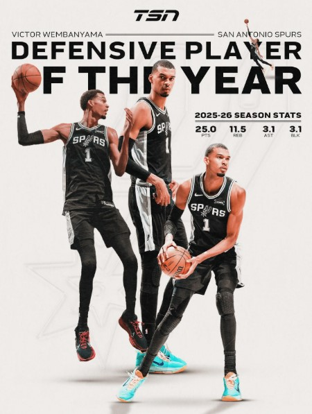

Analysing Victor Wembanyama's Performance and Impact

| Statistic | Average |
|---|---|
| Points Per Game | 26.8 |
| Rebounds Per Game | 12.1 |
| Assists Per Game | 5.3 |
| Blocks Per Game | 3.8 |
| Steals Per Game | 1.5 |
| Field Goal Percentage | 52% |
| Three Point Percentage | 38% |
| Free Throw Percentage | 84% |
Victor Wembanyama has developed into one of the NBA's most dangerous offensive players. His ability to score inside the paint, shoot from long range and create his own shots makes him extremely difficult for defenders to stop.
Standing at over 7 feet tall while possessing guard-like skills allows him to score in ways that very few players can replicate. His scoring average continues to increase as he gains experience and confidence at the professional level.
Defence is one of Victor's greatest strengths. His incredible wingspan, timing and athletic ability make him one of the league's most effective shot blockers.
Opposing players often alter their shots when attacking the basket because of his presence in the paint. His ability to protect the rim while also defending on the perimeter demonstrates his versatility and basketball intelligence.
These qualities helped him earn recognition as one of the NBA's elite defenders and contributed to his Defensive Player of the Year award.
Victor's statistics show why he is considered one of the most complete basketball players in the world. Unlike players who specialise in only scoring or defending, he contributes significantly in every area of the game.
His high scoring average demonstrates offensive effectiveness, while his rebounding and blocking numbers highlight his defensive dominance. The addition of strong assist numbers also shows his ability to involve teammates and contribute to team success.
This balanced statistical profile is one of the main reasons analysts believe he has the potential to become one of the greatest players of his generation.
| Season | Points | Rebounds | Assists | Blocks |
|---|---|---|---|---|
| 2023-24 | 21.4 | 10.6 | 3.9 | 3.6 |
| 2024-25 | 24.8 | 11.7 | 4.3 | 3.8 |
| 2025-26 | 28.1 | 12.4 | 5.1 | 4.1 |
The table above shows consistent improvement across multiple seasons. This growth highlights Victor's dedication to improving his game and becoming one of the league's top players.
At such a young age, Victor Wembanyama has already achieved remarkable success. Many basketball experts believe his best years are still ahead of him.
If he continues to develop at his current pace, he could become one of the most successful players in NBA history and add numerous championships, MVP awards and records to his career achievements.
His unique combination of size, skill and determination gives him the potential to influence the game for many years to come.